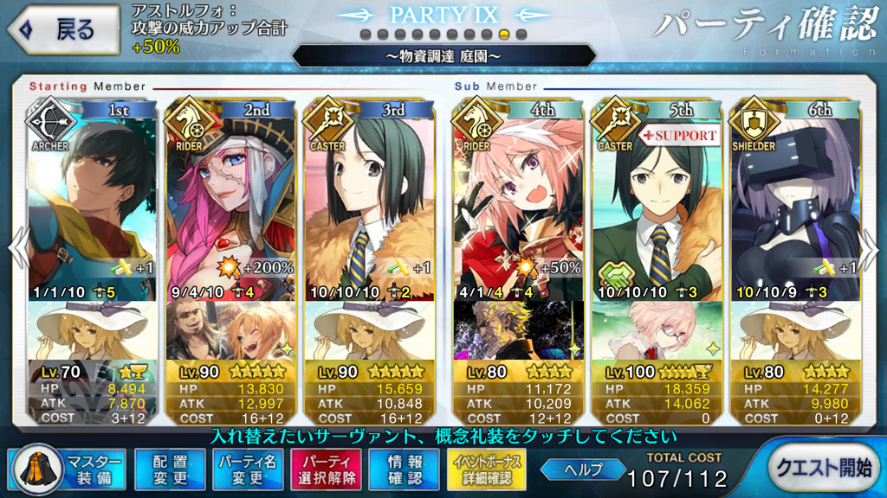

<!DOCTYPE HTML>
<html>
<head><meta name="generator" content="Hexo 3.9.0">
  <meta charset="utf-8">
  
  <title>【FGO】Apocrypha/Inheritance of Glory 物資調達（庭園） 天級 | ぷらずま式改</title>
  <meta name="author" content="NPlasma">

  
  <meta name="description" content="NPlasmaの個人メモ">
  

  

  <meta name="viewport" content="width=device-width, initial-scale=1, maximum-scale=1">

  <meta property="og:title" content="【FGO】Apocrypha/Inheritance of Glory 物資調達（庭園） 天級">
  <meta property="og:site_name" content="ぷらずま式改">

  
  

  
    <meta property="og:image" content="/img/ogp.png">
  

  <!-- ogp -->
  
    
      <meta name="description" content="この記事ではFGOイベントの周回を扱います。 編成画像にて最終再臨絵のネタバレがあるのでご注意を">
<meta name="keywords" content="Fate,ゲーム,FGO,Fate&#x2F;GrandOrder,FGOアポクリファコラボ">
<meta property="og:type" content="article">
<meta property="og:title" content="【FGO】Apocrypha&#x2F;Inheritance of Glory 物資調達（庭園） 天級">
<meta property="og:url" content="http://elleonard.github.io/nplus_doc/2018/05/07/game/fate/fgo/apocrypha/garden/index.html">
<meta property="og:site_name" content="ぷらずま式改">
<meta property="og:description" content="この記事ではFGOイベントの周回を扱います。 編成画像にて最終再臨絵のネタバレがあるのでご注意を">
<meta property="og:locale" content="ja">
<meta property="og:image" content="http://elleonard.github.io/nplus_doc/2018/05/07/game/fate/fgo/apocrypha/garden/garden.png">
<meta property="og:updated_time" content="2019-09-13T04:56:39.110Z">
<meta name="twitter:card" content="summary">
<meta name="twitter:title" content="【FGO】Apocrypha&#x2F;Inheritance of Glory 物資調達（庭園） 天級">
<meta name="twitter:description" content="この記事ではFGOイベントの周回を扱います。 編成画像にて最終再臨絵のネタバレがあるのでご注意を">
<meta name="twitter:image" content="http://elleonard.github.io/nplus_doc/2018/05/07/game/fate/fgo/apocrypha/garden/garden.png">
<meta name="twitter:creator" content="@elleonard_f">
    
    <meta name="twitter:image" content="http://elleonard.github.io/nplus_doc/img/ogp.png">
  

  <link rel="alternate" href="/nplus_doc/atom.xml" title="ぷらずま式改" type="application/atom+xml">
  <link rel="stylesheet" href="/nplus_doc/css/style.css" media="screen" type="text/css">
  <!--[if lt IE 9]><script src="//html5shiv.googlecode.com/svn/trunk/html5.js"></script><![endif]-->
  


  <link rel="apple-touch-icon" sizes="180x180" href="/nplus_doc/favicon/apple-touch-icon.png">
  <link rel="icon" type="image/png" sizes="32x32" href="/nplus_doc//favicon/favicon-32x32.png">
  <link rel="icon" type="image/png" sizes="16x16" href="/nplus_doc//favicon/favicon-16x16.png">
  <link rel="manifest" href="/nplus_doc//favicon/site.webmanifest">
  <link rel="mask-icon" href="/nplus_doc//favicon/safari-pinned-tab.svg" color="#5bbad5">
  <meta name="msapplication-TileColor" content="#da532c">
  <meta name="theme-color" content="#ffffff">
</head>
</html>

<body>
  <header id="header" class="inner"><div class="alignleft">
  <h1><a href="/nplus_doc/">ぷらずま式改</a></h1>
  <h2><a href="/nplus_doc/">NPlasma個人メモ</a></h2>
</div>
<nav id="main-nav" class="alignright">
  <ul>
    
      <li><a href="/">Home</a></li>
    
      <li><a href="/nplus_doc/2016/05/29/about/">About</a></li>
    
      <li><a href="https://twitter.com/elleonard_f">Twitter</a></li>
    
      <li><a href="https://github.com/elleonard">GitHub</a></li>
    
      <li><a href="/nplus_doc/2018/02/09/game/fate/fgo/fgo-link/">FGO</a></li>
    
  </ul>
  <div class="clearfix"></div>
</nav>
<div class="clearfix"></div></header>
  <div id="content" class="inner">
    <div id="main-col" class="alignleft"><div id="wrapper"><article class="post">
  
  <div class="post-content">
    <header>
      
        <div class="icon"></div>
        <time datetime="2018-05-07T07:23:47.000Z"><a href="/nplus_doc/2018/05/07/game/fate/fgo/apocrypha/garden/">2018-05-07</a></time>
      
      
  
    <h1 class="title">【FGO】Apocrypha/Inheritance of Glory 物資調達（庭園） 天級</h1>
  

    </header>
    <div class="entry">
      
        <div id="toc" class="toc-article">
          <p class="toc-title">目次</p>
          <ol class="toc"><li class="toc-item toc-level-1"><a class="toc-link" href="#基本方針"><span class="toc-text">基本方針</span></a></li><li class="toc-item toc-level-1"><a class="toc-link" href="#ドロップアイテム"><span class="toc-text">ドロップアイテム</span></a></li><li class="toc-item toc-level-1"><a class="toc-link" href="#エネミー構成"><span class="toc-text">エネミー構成</span></a></li><li class="toc-item toc-level-1"><a class="toc-link" href="#火力特攻キャラ"><span class="toc-text">火力特攻キャラ</span></a></li><li class="toc-item toc-level-1"><a class="toc-link" href="#編成例"><span class="toc-text">編成例</span></a></li><li class="toc-item toc-level-1"><a class="toc-link" href="#周回用キャラ選別"><span class="toc-text">周回用キャラ選別</span></a><ol class="toc-child"><li class="toc-item toc-level-2"><a class="toc-link" href="#アーラシュ-スパルタクス"><span class="toc-text">アーラシュ/スパルタクス</span></a></li><li class="toc-item toc-level-2"><a class="toc-link" href="#アストルフォ"><span class="toc-text">アストルフォ</span></a></li><li class="toc-item toc-level-2"><a class="toc-link" href="#ドレイク"><span class="toc-text">ドレイク</span></a></li><li class="toc-item toc-level-2"><a class="toc-link" href="#アキレウス"><span class="toc-text">アキレウス</span></a></li><li class="toc-item toc-level-2"><a class="toc-link" href="#その他全体宝具ライダー-バーサーカー"><span class="toc-text">その他全体宝具ライダー/バーサーカー</span></a><ol class="toc-child"><li class="toc-item toc-level-3"><a class="toc-link" href="#水着イシュタル"><span class="toc-text">水着イシュタル</span></a></li><li class="toc-item toc-level-3"><a class="toc-link" href="#フランケンシュタイン（狂）"><span class="toc-text">フランケンシュタイン（狂）</span></a></li></ol></li></ol></li></ol>
        </div>
        <p>この記事ではFGOイベントの周回を扱います。</p>
<p>編成画像にて最終再臨絵のネタバレがあるのでご注意を</p>
<a id="more"></a>

<h1 id="基本方針"><a href="#基本方針" class="headerlink" title="基本方針"></a>基本方針</h1><ul>
<li>3T周回する</li>
<li>可能な限りドロップ追加礼装を搭載する</li>
</ul>
<h1 id="ドロップアイテム"><a href="#ドロップアイテム" class="headerlink" title="ドロップアイテム"></a>ドロップアイテム</h1><ul>
<li><p>城塞の午後</p>
</li>
<li><p>フランの花</p>
</li>
<li><p>蛮神の心臓</p>
</li>
<li><p>禁断の頁</p>
</li>
<li><p>術の秘石</p>
</li>
<li><p>術の輝石</p>
</li>
<li><p>ドラクルコイン</p>
</li>
<li><p>賢者のチョーク</p>
</li>
</ul>
<p>心臓を除いて、ドロップ率は恒常フリークエストや曜日クエストに劣る<br>心臓のドロップ率も特別良いかというとそうでもなさそうな感じがする</p>
<p>交換用のチョーク集めが終わっていない場合や、ドラクルコインが200万に達していない場合であれば回る価値はあるが、そうでなければわざわざ回る場所ではない</p>
<h1 id="エネミー構成"><a href="#エネミー構成" class="headerlink" title="エネミー構成"></a>エネミー構成</h1><ul>
<li>本</li>
<li>デーモン</li>
</ul>
<h1 id="火力特攻キャラ"><a href="#火力特攻キャラ" class="headerlink" title="火力特攻キャラ"></a>火力特攻キャラ</h1><ul>
<li>スパルタクス（+50％）</li>
<li>フランケンシュタイン（狂）（+50％）</li>
<li>アストルフォ（+50％）</li>
<li>アキレウス（+100％）</li>
</ul>
<p>ひとまず攻撃有利のサーヴァントのみ<br>今回配布のジークも+100％であるため、十分に育っていれば火力として活用できるか？</p>
<h1 id="編成例"><a href="#編成例" class="headerlink" title="編成例"></a>編成例</h1><p></p>
<p>オダチェンなし<br>ドロップ礼装は自前で3</p>
<p>アーラシュの礼装は初期NP+30以上必須<br>軍師の忠言、軍師の指揮、弓矢作成で50、マスター礼装の霊子譲渡で20NPが獲得できる<br>1wの敵にしてはHPが高く、36000程度を削るにはアーラシュに攻撃バフを盛る必要がある<br>アーラシュの礼装を凸虚数辺りにするのであれば、マスター礼装は自由になる<br>今回はチョークのドロップ追加があり、初期NP40の彼方への巡礼を搭載している</p>
<p>2wは特攻持ちのアストルフォに任せる<br>特攻なしの場合、それなりのバフが必要な程度にはHPが高く、水着イシュタルは自前バフのみでは削りきれなかった<br>育っていればアキレウスでも代用可能と思われる<br>スパルタクスや狂フランでももしかしたら行けるかも？<br>凸カレスコをつけているが、アストルフォ/アキレウス/スパルタクスは自前でNPチャージできるので必須ではない<br>アストルフォは理性蒸発がLv10になっていれば初期NP50の相撲等でも良く、アキレウスとスパルタクスはスキルが育っていれば凸虚数でも良い</p>
<p>3wは安定のドレイク<br>凸トゥリファスにてを装備し、星の開拓者と孔明のスキルでNP100にする</p>
<h1 id="周回用キャラ選別"><a href="#周回用キャラ選別" class="headerlink" title="周回用キャラ選別"></a>周回用キャラ選別</h1><h2 id="アーラシュ-スパルタクス"><a href="#アーラシュ-スパルタクス" class="headerlink" title="アーラシュ/スパルタクス"></a>アーラシュ/スパルタクス</h2><p>いつもの<br>スパルタクスに関してはイベント特攻が乗っているため、構成次第では2wを任せられるかも</p>
<h2 id="アストルフォ"><a href="#アストルフォ" class="headerlink" title="アストルフォ"></a>アストルフォ</h2><p>最大でNPを50チャージできる星4全体宝具ライダー<br>怪力を乗せた宝具で2wをすっとばせる</p>
<p>理性蒸発がLv10であれば、ドレイクの代わりに3wを担当できそう</p>
<h2 id="ドレイク"><a href="#ドレイク" class="headerlink" title="ドレイク"></a>ドレイク</h2><p>最大でNPを50チャージできる星5全体宝具ライダー<br>凸トゥリファスにてを装備しつつ、孔明と合わせてNPを100にできる</p>
<h2 id="アキレウス"><a href="#アキレウス" class="headerlink" title="アキレウス"></a>アキレウス</h2><p>イベント特攻持ち、NPを最大30チャージできる全体宝具ライダー</p>
<h2 id="その他全体宝具ライダー-バーサーカー"><a href="#その他全体宝具ライダー-バーサーカー" class="headerlink" title="その他全体宝具ライダー/バーサーカー"></a>その他全体宝具ライダー/バーサーカー</h2><h3 id="水着イシュタル"><a href="#水着イシュタル" class="headerlink" title="水着イシュタル"></a>水着イシュタル</h3><p>全体に3T持続するBQアップバフをかけられる全体宝具ライダー<br>NPリチャージは輝ける水の衣Lv9で21程度のため、孔明と合わせても全体宝具2連打はできない</p>
<h3 id="フランケンシュタイン（狂）"><a href="#フランケンシュタイン（狂）" class="headerlink" title="フランケンシュタイン（狂）"></a>フランケンシュタイン（狂）</h3><p>イベント特攻持ち全体宝具バーサーカー<br>自前で宝具威力をアップするスキルを持つ</p>

      
    </div>
    
    <footer>
        <div class="alignright">
            <a href="https://twitter.com/share?ref_src=twsrc%5Etfw" class="twitter-share-button" data-text="【FGO】Apocrypha/Inheritance of Glory 物資調達（庭園） 天級 | ぷらずま式改" data-url="http://elleonard.github.io/nplus_doc/2018/05/07/game/fate/fgo/apocrypha/garden/" data-via="elleonard_f" data-show-count="false">Tweet</a><script async src="https://platform.twitter.com/widgets.js" charset="utf-8"></script>
        </div>
        
  
  <div class="categories">
    <a href="/nplus_doc/categories/FGO/">FGO</a>
  </div>

        
  
  <div class="tags">
    <a href="/nplus_doc/tags/Fate/">Fate</a>, <a href="/nplus_doc/tags/ゲーム/">ゲーム</a>, <a href="/nplus_doc/tags/FGO/">FGO</a>, <a href="/nplus_doc/tags/Fate-GrandOrder/">Fate/GrandOrder</a>, <a href="/nplus_doc/tags/FGOアポクリファコラボ/">FGOアポクリファコラボ</a>
  </div>

        
          <div class="article-prev">
              <a href="/nplus_doc/2018/05/16/game/fate/fgo/kogetsukan/">【FGO】虚月館殺人事件 <span class="prev-arrow"/></a>
            </div>
        
        
          <div class="article-next">
            <a href="/nplus_doc/2018/05/05/game/fate/fgo/freequest/observatory-shell/">【FGO】バビロニア 観測所 追憶の貝殻集め 周回 <span class="next-arrow"/></a>
          </div>
        
        <!-- partial('post/share') -->
      <div class="clearfix"></div>
    </footer>
  </div>
</article>


</div></div>
    <aside id="sidebar" class="alignright">
  <div class="search">
  <form action="//google.com/search" method="get" accept-charset="utf-8">
    <input type="search" name="q" results="0" placeholder="検索">
    <input type="hidden" name="q" value="site:elleonard.github.io/nplus_doc">
  </form>
</div>

  
<div class="widget tag">
  <h3 class="title">カテゴリ</h3>
  <ul class="entry">
  
    <li><a href="/nplus_doc/categories/FGO/">FGO</a><small>47</small></li>
  
    <li><a href="/nplus_doc/categories/niconico/">niconico</a><small>3</small></li>
  
    <li><a href="/nplus_doc/categories/アニメ感想/">アニメ感想</a><small>10</small></li>
  
    <li><a href="/nplus_doc/categories/ゲーム/">ゲーム</a><small>47</small></li>
  
    <li><a href="/nplus_doc/categories/ゲーム/ゲームレビュー/">ゲームレビュー</a><small>36</small></li>
  
    <li><a href="/nplus_doc/categories/ゲーム制作/">ゲーム制作</a><small>8</small></li>
  
    <li><a href="/nplus_doc/categories/遊戯王ブロンティーズ/デッキレシピ/">デッキレシピ</a><small>4</small></li>
  
    <li><a href="/nplus_doc/categories/小説/">小説</a><small>4</small></li>
  
    <li><a href="/nplus_doc/categories/情報技術/">情報技術</a><small>11</small></li>
  
    <li><a href="/nplus_doc/categories/漫画/">漫画</a><small>2</small></li>
  
    <li><a href="/nplus_doc/categories/百合/">百合</a><small>6</small></li>
  
    <li><a href="/nplus_doc/categories/艦これ/">艦これ</a><small>76</small></li>
  
    <li><a href="/nplus_doc/categories/遊戯王ブロンティーズ/">遊戯王ブロンティーズ</a><small>4</small></li>
  
    <li><a href="/nplus_doc/categories/雑記/">雑記</a><small>4</small></li>
  
  </ul>
</div>


  
<div class="widget tag">
  <h3 class="title">最近の投稿</h3>
  <ul class="entry">
    
      <li>
        <a href="/nplus_doc/2020/03/13/anime/girls-und-panzer/">【アニメ感想】ガールズ＆パンツァー TVシリーズ アンツィオ戦 劇場版</a>
      </li>
    
      <li>
        <a href="/nplus_doc/2020/03/07/engineering/rmmv/good-plugin2/">RPGツクールMV 続・良いプラグインとは</a>
      </li>
    
      <li>
        <a href="/nplus_doc/2020/02/21/novel/dear-all-of-you/">【ラノベ感想】じんるいのみなさまへ -わたしたちの場所-</a>
      </li>
    
      <li>
        <a href="/nplus_doc/2020/02/20/game/dear-all-of-you/">【ゲーム感想】じんるいのみなさまへ</a>
      </li>
    
      <li>
        <a href="/nplus_doc/2020/02/04/game/crystar/">【ゲーム感想】CRYSTAR -クライスタ-</a>
      </li>
    
  </ul>
</div>


  
<div class="widget tag">
  <h3 class="title">Link</h3>
  <ul class="entry">
    
      <li>
        <a href="https://www.nicovideo.jp/">niconico</a>
      </li>
    
      <li>
        <a href="http://lovingtheflags1986.blog96.fc2.com/">国旗と酒が待ち遠しいドリル日記</a>
      </li>
    
  </ul>
</div>


</aside>
    
    <div class="clearfix"></div>
  </div>
  <footer id="footer" class="inner"><div class="alignleft">
  <p>
  
  &copy; 2020 NPlasma
  
  All rights reserved.</p>
  <p>Powered by <a href="http://hexo.io/" target="_blank">Hexo</a></p>
</div>
<div class="clearfix"></div>
</footer>
  <script src="/nplus_doc/js/jquery.imagesloaded.min.js"></script>
<script src="/nplus_doc/js/gallery.js"></script>


<link rel="stylesheet" href="/nplus_doc/fancybox/jquery.fancybox.css" media="screen" type="text/css">
<script src="/nplus_doc/fancybox/jquery.fancybox.pack.js"></script>
<script type="text/javascript">
(function($){
  $('.fancybox').fancybox();
})(jQuery);
</script>


<div id='bg'></div>
</body>
</html>
